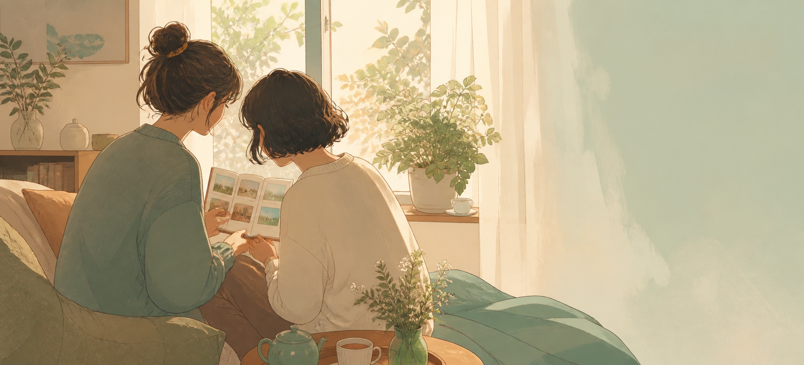
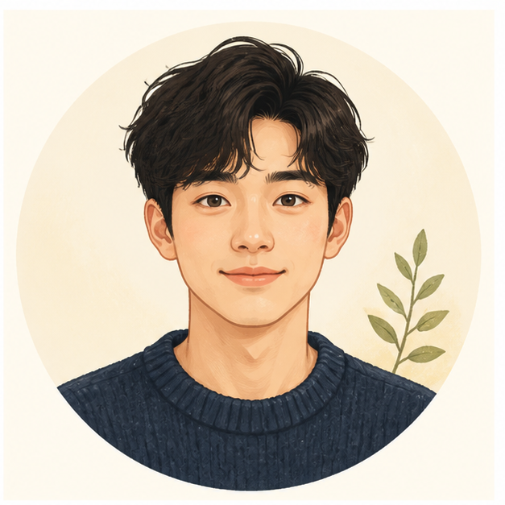
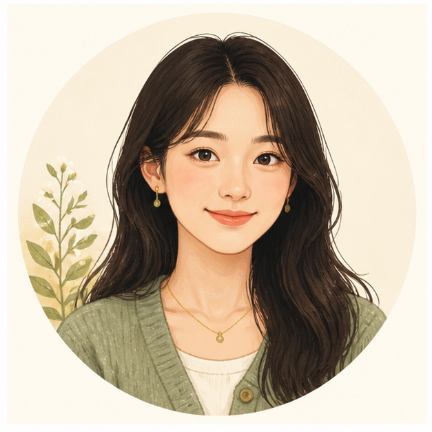
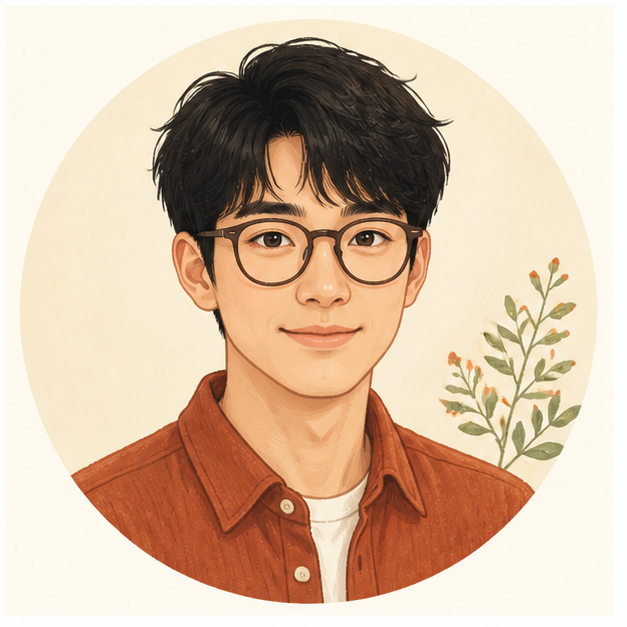
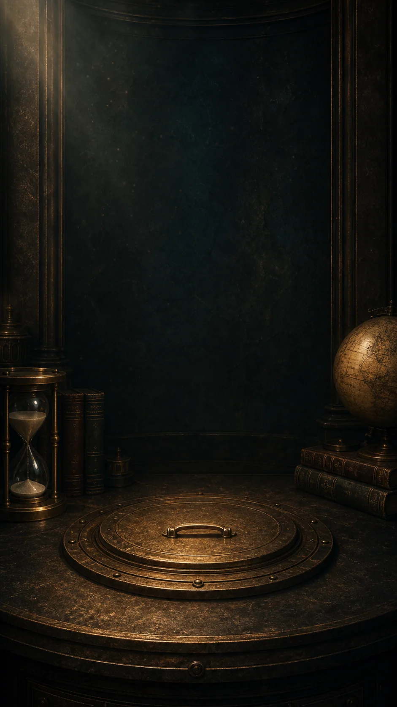

🌈

☀️
☁️
🌦️晚风小屋
详情 ›共同 18 条回忆 · 3 个约定 · 23 天


☀️
☁️
🌦️共同 18 条回忆 · 3 个约定 · 23 天
沿着海边慢慢走，把今天留在这里。
由 林溪 记录不需要经营公开动态。想到就写、一起约好、留给未来，再回到某一天慢慢看。
想到什么就写什么。文字和照片，会按日期回到你们的时间线。
14:41:00 由南枝记录
10:57:31 由池屿记录
21:56:34 由南枝记录
21:15:18 由我记录
10:48:55 由我记录

邀请重要的人加入。这里的每一条记录，只属于这个空间。
共同 18 条回忆 · 3 个约定 · 第 23 天
成员确认参加，各自设置提醒。等事情发生，再一起留下回忆。
2026年9月2日 · 南湾海边
指定日期，或把揭晓交给未来。没到那天，就先替你们好好保管。
还有约 1 年
开启那天，圈内成员可以一起打开
有照片的日子会亮起来。点开日期，就能看见那天留下的生活。
南湾海边
#散步
由阿澈记录
跨越两台电脑的一句问候，后来改变了人们彼此联系的方式。
不是另一个需要经营的社交空间，只是一个能和重要的人安心记录生活的地方。
自己的内容留给自己，共同空间只让成员看见。
同一个约定，每个人设置自己的提醒，彼此不打扰。
记录、约定和胶囊都会被好好保存，等我们以后再回来看看。
iOS 与 Android 版本正在准备中。